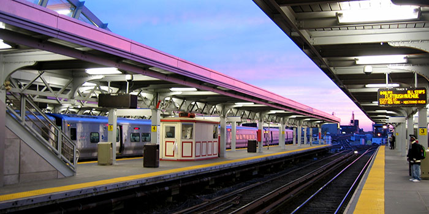

ILR News Center
"Alive and Well"
Collective bargaining did its job in railroad dispute, Margolies says
The Long Island Rail Road schedule remains on track, thanks to compromise borne of the collective bargaining process, according to Worker Institute Senior Associate Ken Margolies.
"It led to an agreement that recognized the value and needs of the workers, while considering the MTA's need to find a way to pay for the terms of the pending contract," he said.
"That's what collective bargaining is designed to do and, traditionally, it has produced many more settlements than strikes," Margolies said.
The Metropolitan Transportation Authority and an eight-union coalition representing 5,400 railroad workers settled a four-year contract dispute Thursday.
"At a time when collective bargaining is under attack by politicians and corporations around the world, New Yorkers should take pride that the collective bargaining process is alive and well in the case of the Long Island Rail Road negotiations."
Terms announced this week followed fears that a strike would shut down the railroad that transports up to 300,000 riders daily to and from the metro New York area.
"The proven methods and techniques of collective bargaining - including the pressure of a deadline with dire consequences, recommendations from neutrals such as the Presidential Emergency Boards, and skilled mediation from political leadership and negotiators on both sides - produced a result far better than if there had been a strike or if one side had dictated terms to the other," Margolies said.
"Speaking as someone who teaches collective bargaining, the press conference was fascinating in how it illustrated the process," he said, crediting Gov. Andrew Cuomo for steering tension into a productive settlement.
The contract becomes final when Long Island Railroad unions vote on it; members are expected to vote in favor of the new pact.
The Long Island Rail Road schedule remains on track, thanks to compromise borne of the collective bargaining process, according to Worker Institute Senior Associate Ken Margolies.
"It led to an agreement that recognized the value and needs of the workers, while considering the MTA's need to find a way to pay for the terms of the pending contract," he said.
"That's what collective bargaining is designed to do and, traditionally, it has produced many more settlements than strikes," Margolies said.
The Metropolitan Transportation Authority and an eight-union coalition representing 5,400 railroad workers settled a four-year contract dispute Thursday.
"At a time when collective bargaining is under attack by politicians and corporations around the world, New Yorkers should take pride that the collective bargaining process is alive and well in the case of the Long Island Rail Road negotiations."
Terms announced this week followed fears that a strike would shut down the railroad that transports up to 300,000 riders daily to and from the metro New York area.
"The proven methods and techniques of collective bargaining - including the pressure of a deadline with dire consequences, recommendations from neutrals such as the Presidential Emergency Boards, and skilled mediation from political leadership and negotiators on both sides - produced a result far better than if there had been a strike or if one side had dictated terms to the other," Margolies said.
"Speaking as someone who teaches collective bargaining, the press conference was fascinating in how it illustrated the process," he said, crediting Gov. Andrew Cuomo for steering tension into a productive settlement.
The contract becomes final when Long Island Railroad unions vote on it; members are expected to vote in favor of the new pact.